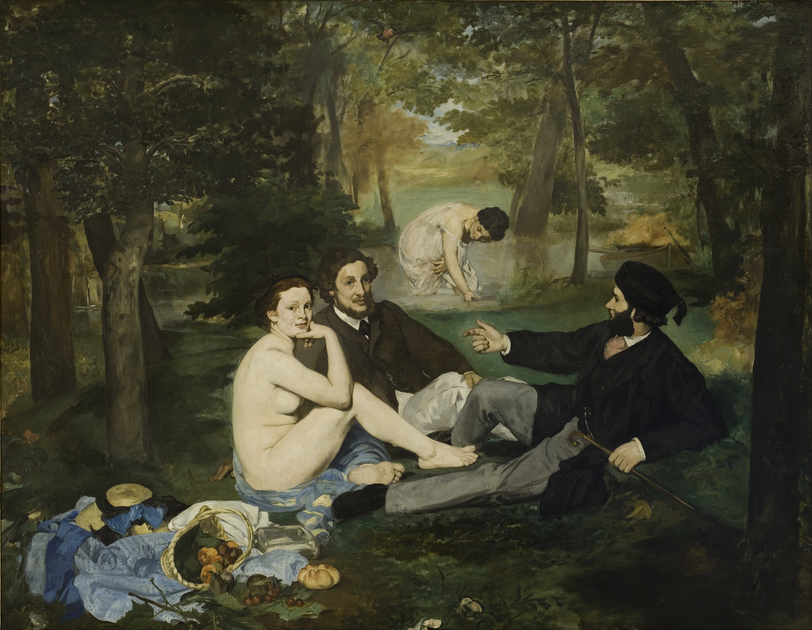

Exhibitions
Opera Gallery, gallery presentation, New York, New York, US, circa 2000s.
Literature
Ron English, Popaganda: The Art & Subversion of Ron English (San Francisco: Last Gasp, 2001), p. 120. ISBN 1-887128-60-3.
Notes
This work references Édouard Manet’s Le Déjeuner sur l’herbe.
This image has also circulated online under the alternate title The New Luncheon On The Grass. The present catalogue record retains the title The New Politically Correct Luncheon on the Grass.
Ancillary Documentation
The following material documents the art-historical reference cited for this work.

Selected Online Circulation
Selected examples of the work’s online circulation, reproduction, or discussion. This list is not exhaustive; it is intended to document representative appearances of the image beyond formal exhibition and publication records.